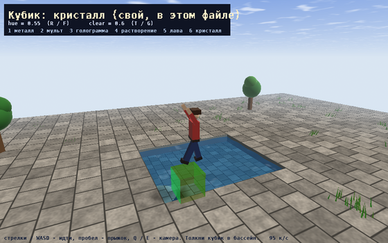

Write complex programs in a clear language. Get a real, fast program.
Пиши сложные программы на понятном языке. Получай настоящую быструю программу.
Tachbit reads almost like Python and runs like C. The compiler takes care of memory, cores and safety checks, and explains mistakes in plain words before the program runs.
Tachbit читается почти как Python, а работает как C. Память, ядра и проверки берёт на себя компилятор, а ошибки объясняет простыми словами ещё до запуска.
obj Item
name: text
price: int
func total(items: list Item) gives r: int
s = 0
each it in items
s += it.price
return s
func main()
items = list Item
items.add(Item(name: "tea", price: 120))
items.add(Item(name: "coffee", price: 200))
print("total:", total(items))
Indentation, no noise
Отступы вместо скобок
Blocks are indentation. Types are inferred or written. Programs start at func main().
Блоки задаются отступами. Типы выводятся сами или пишутся явно. Программа начинается с func main().
Native, not a prototype
Настоящая программа, а не макет
Tachbit compiles to C, then clang or gcc makes a native program. The compiler is written in Tachbit and builds itself. Messages in English or Russian.
Tachbit переводит программу в C, а clang или gcc делают из неё настоящую программу. Компилятор написан на самом Tachbit и собирает сам себя. Сообщения на русском или английском.
What you can build
Что можно написать
Games and 3D
Игры и 3D
Blender models with animation, PBR materials, lights and shadows, particles, your own shaders written in Tachbit. Metal on Mac, Vulkan on Linux and Windows.
Модели из Blender с анимацией, PBR-материалы, свет и тени, частицы, свои шейдеры прямо на Tachbit. Metal на Mac, Vulkan на Linux и Windows.
Desktop apps
Приложения
Several OS windows, buttons, lists and dialogs from lib/ui.tb, files, sound, gamepad, mouse look and fullscreen.
Несколько окон ОС, кнопки, списки и диалоги из lib/ui.tb, файлы, звук, геймпад, мышь и полный экран.
Safe use of every core
Все ядра без гонок
on all cores, background, channels and move. The compiler catches data races before the program runs.
on all cores, background, каналы и move. Гонки данных компилятор ловит до запуска.
Down to bare metal
До самого железа
tb bare makes a bootable x86-64 kernel. danger blocks give memory, ports and asm when you need them.
tb bare собирает загружаемое ядро x86-64. В блоках danger доступны память, порты и asm.
Errors you cannot ignore
Ошибки не теряются
fail, try and or. A call that can fail must be handled, so problems do not hide.
fail, try и or. Вызов, который может сломаться, нельзя проигнорировать.
Editor support
Редактор
VS Code extension: colors, Tachbit Dark and Light themes, run with one button, errors right in the code.
Расширение для VS Code: подсветка, темы Tachbit Dark и Light, запуск одной кнопкой, ошибки прямо в коде.
Made with Tachbit
Сделано на Tachbit

examples/apps/pbr_room

examples/apps/cube_man

apps/files
Install
Установка
Mac / Linux
One command. Needs a C compiler (on Mac: xcode-select --install).
Одна команда. Нужен компилятор C (на Mac: xcode-select --install).
curl -fsSL https://raw.githubusercontent.com/superbro456/Tachbit/main/tools/get.sh | sh
Homebrew
Mac with Homebrew:
Mac с Homebrew:
brew tap superbro456/tachbit https://github.com/superbro456/Tachbit brew install --HEAD tachbit
Windows
Installer, no admin rights needed. It also sets up a C compiler if there is none.
Установщик без прав администратора. Если нет компилятора C, поставит и его.
First program
Первая программа
tb new hello # a project with main.tb tb start hello # build and run tb run file.tb # run one file tb check file.tb # only look for errors tb lang en # messages in English (tb lang ru — in Russian)